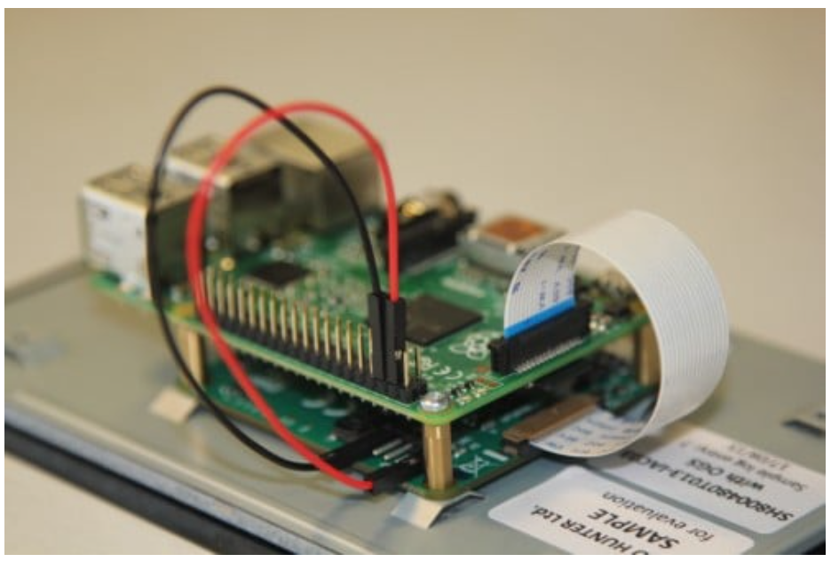

Make a digital photo frame
Make a digital photo frame
The steps to build the digital photo frame are these:
- Attach the touch display to the Raspberry Pi board.
- Attach the heat sinks to the Raspberry Pi board.
- Prepare your laptop.
- Download the Raspberry Pi operating system.
- Install the operating system.
- Write the Python code that displays the photos.
- Refine the project.

To see a larger image, click the image.
Attach a touch display to the Raspberry Pi board
The Raspberry Pi is what they call an SBC (a single board computer). It has neither a screen where you can see the output of your commands, nor a keyboard through which you can send these commands to the computer. It is just a barebones computer, with no peripheral devices such as keyboard, mouse, monitor, speaker, or microphone. To use a Raspberry Pi as a computer, you must manually attach these peripherals to it.
Here, you're not going to use the Raspberry Pi as a computer, but you are building a photo frame. Therefore, the barest minimum peripheral device that you need is a display screen.
These are the materials that you need.
| Front view | Back view |
|---|---|
|
|
|


Notice the left side of both the images. At the top left quadrant is the Raspberry Pi board. At the bottom left is the power supply, the heat sinks, and the microSD card. These objects, when put together, constitute a standalone Raspberry Pi computer that you can use to do...stuff. Like building a digital photo frame.
Look at the right half of both the images. The objects there are what's included in an official pack of the Raspberry Pi Touch Display. When plugged into a Raspberry Pi computer (which you can assemble from the materials at the left), this set becomes the display unit for the Raspberry Pi computer.
Notice the view of the display screen from the back (second image, upper right quadrant). The green board, called the controller board, has four little screws at the four corners. To mount the display screen on to the Raspberry Pi, you loosen these four screws at the four ends of the controller board of the display screen, place the Raspberry Pi on to it, and put the screws back in place.
You then connect these two boards by means of two wires (red and black) and a cable (the white straight strip), which you can see at the bottom right quadrant of the images. Two things to note here:
- You don't need the shiny curved strip also shown in the picture; it came as standard packaging with the display and is used in Raspberry Pi 4 models. The model being used here, in this project, is Raspberry Pi 3B+, so the straight white strip is the one to use. In the Raspberry Pi world, strips like these are known as ribbon cables.
- You also don't need the yellow wire and the green wire. In the Raspberry Pi world, this kind of wire is called a jumper cable. Your photo frame uses a Raspberry Pi 3B+, which needs only two jumper cables, the red and the black. The yellow and green jumper cables are needed only if you're using an older model of the Raspberry Pi, one that does not have a 40-pin GPIO strip. For this tutorial, the GPIO pins aren't the focus so they won't be discussed, but if you're curious, you can read up on
GPIO,SCL, andSDApins.
When you're done with attaching the display screen to the Raspberry Pi, the entire assembly should look something like this image (taken from https://www.raspberrypi.com/documentation/accessories/display.html):

To see a larger image, click the image.
{kind=link}
I found this YouTube video helpful. It shows the steps to attach the display screen to the Raspberry Pi board.
If you'd rather read some written instructions, see this official guide from the good folks at Raspberry Org: Touch Display.
After the display screen is mounted on the computer board, fix the heat sinks.
Fix heat sinks to the Raspberry Pi board
A heat sink is a square, metal object that is attached to a Raspberry Pi board by means of thermal paste. It draws the heat away from the processor, the USB controller, and the ethernet controller. A photo frame program running on a Raspberry Pi 3B+ should not heat the little computer too much, but it is safe practice to use heat sinks.
The three small corrugated squares that you see at the bottom left of the image are heat sinks. In the Raspberry Pi world, these corrugations are known as fins.

To see a larger image, click the image.
Notice that the image shows three heat sinks. A Raspberry Pi Model 3B+ needs only two of those. It's the Raspberry Pi 4 model that would've needed all three heat sinks, but because these heat sinks hardly cost anything, shops in my corner of the world usually sell them in sets of 3.
Attach the heat sinks to the CPU chip and the network chip of the Raspberry Pi board. The one that goes over the CPU chip is the largest one; the one to use on the ethernet board is the smallest one.
- Peel off the adhesive strip at the back of the heat sink, all the while taking care that you don't touch the sticky part that the strip was covering. The sticky part is the thermal paste that will hold the sink in place.
- Press the sink ever so slightly on to the chip on the Raspberry Pi board.
I found this YouTube video to be helpful.
After the heat sinks are in place, prepare your laptop for the Raspberry Pi setup.
Prepare your laptop for the Raspberry Pi installation
Before you can use your laptop to run a Raspberry Pi OS installation, make sure that the following software is available on it.
- Download SD Memory Card Formatter. Before you can load an operating system on your microSD card, you must format it. Use the formatter provided by the SD Association because this formatter is platform-agnostic.
- Download Raspberry Pi Imager. The good folks at Raspberry Org have created a wizard that can install an operating system on a microSD card and also, simultaneously, configure the operating system with the barest minimum parameters that are needed to get a Raspberry Pi computer up and running. This wizard is known as Raspberry Pi Imager.
- Download Angry IP Scanner. If you don't plan to use an external mouse, keyboard, and monitor with your Raspberry Pi, you'll need to connect to it through your laptop. To do so, you need the IP address of the Raspberry Pi. A network scanner can show you the IP addresses of all devices that are connected to your network. One such network scanner is Angry IP Scanner, so download it.
- Download PuTTY. If you don't plan to use an external mouse, keyboard, and monitor with your Raspberry Pi, you'll need to connect to it through your laptop. One of the ways to do so is by using a secure shell (SSH) connection. PuTTY is an SSH client through which you can interactively run a command-line session on your Raspberry Pi.
- (Optional) Download WinSCP. If you need to transfer files to and from the Raspberry Pi computer, you need a secure file-transfer client. WinSCP is one such client.
When you're done, you should have the following software on your laptop.

You are now ready to install an operating system on your Raspberry Pi.
Download the operating system
For this step, you need a microSD card and a card reader that can be plugged into your laptop.
The operating system will be downloaded on to the microSD card, which will then be inserted into the microSD slot of the Raspberry Pi board, which will then be plugged into a power socket. That's what will get the little board up and running, and make it ready for the final steps of the project.
- Turn on your laptop. Make sure that it is connected to the internet.
- Plug the microSD card into your laptop, and format it by running SD Card Formatter. Use the Overwrite option to format; this option takes longer but ensures that everything on the SD card is wiped clean and the card formatted.
- On the laptop, run the Raspberry Pi Imager wizard and download Raspberry Pi's operating system to it. All Raspberry Pi computers run on operating systems that are based on the open-source Debian operating system. This project uses Debian Bookworm with the Raspberry Pi Desktop. Begin the download process by selecting the model as Raspberry Pi 3 and the operating system as Raspberry Pi OS 64-bit (A port of Debian Bookworm with the Raspberry Pi Desktop).
- On the page for OS customisation, click Edit settings. These settings are used for configuring the operating system with your credentials and environment. If prompted for loading Wi-Fi credentials from your host computer, respond in the affirmative. Then, specify the values for at least the following parameters. It's also a good idea to note down these values for easy reference, because you'll need these values later:
- On the General page:
- hostname, which is a name you call your Raspberry Pi by. This is the name that'll be displayed when you search for your Raspberry Pi on the network later.
- username and password, which are the credentials to use when logging in to Raspberry Pi remotely. The user name that you specify here will have administrator privileges to your Raspberry Pi.
- Wireless LAN, which should be prepopulated because you already asked the Wi-Fi credentials to be loaded from the host computer.
- Locale settings, for your time zone, keyboard preferences, and other such locale-related things.
- On the Services page, select the Enable SSH box and the option for password authentication. Later, when the project is up and running, you might choose to isolate your Raspberry Pi from the network, and if you decide to do that, you can turn SSH off, but for the time being, enable it because you might need it for troubleshooting purposes.
- On the Options page, select all the options.
- On the General page:
- Click Save and, when prompted for applying these settings, answer in the affirmative. Click Yes again, and then wait for the operating system to be copied on to the microSD card.
- When the process is complete, take the microSD card out of the laptop port.
Install the operating system
For this project, you install the operating system called Raspberry Pi OS 64-bit (A port of Debian Bookworm with the Raspberry Pi Desktop) for the model called Raspberry Pi 3.
- Insert the microSD card to the Raspberry Pi's board, plug in the power adapter to a wall socket, and insert the cable into the USB-C power slot of the Raspberry Pi. If you're going to use an external keyboard and mouse, insert the USB receivers for these devices into the USB ports of the Raspberry Pi.
- Turn on the power switch of the wall socket. The light on the Raspberry Pi board should glow green, and the display screen should first show a rectangle of rainbow colours, and then finally show you the Raspberry Pi desktop screen.
- If you don't have an external keyboard and mouse, log in to the Raspberry Pi from your laptop:
- Find the IP address of your nework gateway. To do so, on your laptop, open the command prompt, and type
ipconfig. Then, note down the value that's displayed as Default Gateway. - Start Angry IP Scanner. For the first box in the IP Range field, specify the value of the default gateway that you noted down in the previous step. For the second field, specify a number that's about 15-20 stops away. For example, if your default gateway is
192.168.4.1, specify the end range to be something around192.168.4.15, so that the scan doesn't take too long. (The assumption here is that you don't already have more than 15-20 devices connected to your network!) Click Start and wait for the scan to be over. Then, in the Hostname column, look for the name of your Raspberry Pi. This is the name that you specified as the hostname in the OS Customisation settings while downloading the operating system on the microSD card. When you've spotted this hostname, look for the entry in the IP column. You need this value in the next step. - On your laptop, start PuTTY and enter the IP address of your Raspberry Pi. This is the value that you noted down in your previous step. Click Open. When prompted for login credentials, enter the user name and password that you specified in the OS Customisation settings while downloading the operating system on the microSD card. You should now see a prompt like this:
<hostname>@<username>:~ $. For example, if your hostname isdelphiand user name isoracle, you'll seedelphi@oracle:~ $It means you're now logged in to your Raspberry Pi and everything's working as expected.
- Find the IP address of your nework gateway. To do so, on your laptop, open the command prompt, and type
- Update the operating system that you installed on the microSD card. You used Raspberry Pi Imager for downloading the operating system but it might not contain the latest patches, fixes, and upgrades. Pull these things in:
- Open a terminal window. If you're logged in through your laptop, you're already in the terminal window. If you're using an external keyboard and mouse, move the mouse over the icons at the top left, locate the one labelled Terminal, and click it.
- To see if there are any updates to the operating system, run the following command:
sudo apt-get update. The local cache of the Raspberry Pi is updated with the package information for the package repositories. You're shown a list of the these packages, and now it's up to you to upgrade them to their latest versions. - Upgrade the software shown on the list by running the following command:
sudo apt-get upgrade. When prompted for permission to proceed with the upgrade, answer in the affirmative. The actual updates for the installed software and the operating system are now downloaded and installed on your Raspberry Pi.
- If you don't have an external mouse or keyboard, set up Raspberry Pi Connect so that you can control the Raspberry Pi through a laptop through the Raspberry Pi's desktop GUI itself. You're already logged into the Raspberry Pi through your laptop via SSH, but you can use only the terminal window when you're so logged in; you can't use the Raspberry Pi's desktop GUI. With the Connect software, you can log into your Raspberry Pi through any browser, and use it through its desktop environment.
- Install Connect by running the following command in the terminal window:
sudo apt install rpi-connect. - Start Connect by running the following command in the terminal:
rpi-connect on. - Generate a link that will connect your Raspberry Pi computer with your Connect account by running the following command from the terminal:
rpi-connect signin. You're shown a sign-in URL on the terminal. - On your laptop, open a browser, type the URL shown on the Raspberry Pi terminal window, and follow the onscreen prompts to complete the signin and authentication process.
- In the same browser window, specify a name to identify your device, and click Create device and sign in.
- Install Connect by running the following command in the terminal window:
- If you're not immediately proceeding to the next step (where you write the Python program), shut down the Raspberry Pi.
- If you're using an external mouse, close the terminal window. Then click the Raspberry Pi icon near the top left and click Shutdown > Shutdown. Wait till the green light on the Raspberry Pi board stops flashing, and then switch off the power supply.
- If you're logged in through your laptop, type the following command on the terminal:
sudo shutdown -h now. You should be disconnected from Raspberry Pi and the terminal window should disappear. Wait till the green light on the Raspberry Pi board stops flashing, and then switch off the power supply.
Now that your Raspberry Pi is ready to be used as a computer, you can proceed to creating the Python script that displays your photo collection.
Write the Python code for displaying the photos
A digital photo frame reads photo files from a storage device, and displays them on the screen for a specified time. For the photo frame that you're building, this job will be done by a Python program.
The operating system that you installed on the Raspberry Pi already includes Python, as well as an integrated development environment (IDE) that makes it easier for you to write, run, and edit Python programs. This IDE is the Thonny IDE. You'll use Thonny to write the photo frame program.
- Plug in the USB drive containing your photos to the Raspberry Pi, and switch it on.
- If you don't have an external keyboard or mouse, log in remotely to your Raspberry Pi by using Connect:
- On your laptop, open
https://connect.raspberrypi.com/and sign in. - On the Devices page, click Connect via > Screen sharing, and wait for a few seconds for the remote session to start. You should then see the Raspberry Pi desktop in your laptop browser window.
- On your laptop, open
- Install any patches, fixes, and upgrades that might have been made to the operating system by opening the Raspberry Pi terminal window (the console icon near the top left) and running the following two commands one after the other:
sudo apt-get updatesudo apt-get upgrade
- Open Thonny by clicking the Raspberry Pi icon near the top left, and then clicking Programming > Thonny.
- Create a virtual environment for your project. A virtual environment is like a boxed enclosure that contains all the Python libraries and packages that are needed for your code to run. Click Tools > Options, and then click Interpreter. Make sure that the interpreter is
Local Python 3. Then, click New virtual environment and follow the onscreen guidance to create an empty folder and designate it as the place where your project will live. When everything's done, click OK. - Open a new file by clicking File > New. Copy into it the code from The code section of this page. Then, edit line 20 to change
usb_dir = '/media/pi/'tousb_dir = '/media/<yourPiUserName>/'. For example, if the user name that you specified when setting up the Raspberry Pi wasoracle, line 20 in the code should beusb_dir = '/media/oracle/'. - Install a Python package called
Pillowin the virtual environment. To do so, click Tools > Manage packages, search forPillow, and click Install. - Save the file, and click the Run icon. You should see your photos being picked up and displayed one after the other.
Your photo frame is now ready. You can leave it as is now, or you might choose to refine it.
The code
import os
import time
import tkinter as tk
from PIL import Image, ImageTk
# Function to get a list of image files from a directory and its subdirectories
def get_image_files(directory):
image_extensions = {'.png', '.jpg', '.jpeg', '.bmp', '.gif'}
image_files = []
for root, _, files in os.walk(directory):
for file in files:
if file.lower().endswith(tuple(image_extensions)):
image_files.append(os.path.join(root, file))
return image_files
# Main function to run the digital photo frame
def digital_photo_frame():
# Directories to scan for images
local_dir = os.getcwd() # Current working directory
usb_dir = '/media/pi/' # The USB mount path in the Raspberry Pi
# Collect all image files
images = get_image_files(local_dir) + get_image_files(usb_dir)
if not images:
print("Couldn't find any image files in the specified directories.")
return
# Create a Tkinter window
root = tk.Tk()
root.title('Raspberry Pi Photo Frame') # The title doesn't matter; it won't be displayed
# Fullscreen settings (optional)
root.attributes('-fullscreen', True)
root.bind("<Escape>", lambda e: root.destroy()) # Exit fullscreen with the Esc key
# Label to display the image
label = tk.Label(root)
label.pack(expand=True, fill=tk.BOTH)
# Function to update the displayed image
def update_image(index):
img_path = images[index]
img = Image.open(img_path)
img = img.resize((root.winfo_screenwidth(), root.winfo_screenheight()), Image.Resampling.LANCZOS)
photo = ImageTk.PhotoImage(img)
label.config(image=photo)
label.image = photo
root.after(10000, update_image, (index + 1) % len(images)) # Change the image every 10 seconds
# Start displaying the first image
update_image(0)
# Run the Tkinter event loop
root.mainloop()
# Run the script
if __name__ == "__main__":
digital_photo_frame()
You can also download the raw Python file.
Notice the first four lines of the code.
import os
import time
import tkinter as tk
from PIL import Image, ImageTk
This is where you import all the libraries and packages needed for this project. A Python library is a collection of programs that do a specific task, and can be called in your program by their name. Libraries make it easy to do things that would've otherwise needed you to write out, manually, the several lines of code needed to do that thing. For example, assume you need to count the number of words in a sentence. The manual (non-library) way of doing so would be to write something like this:
sentence = 'Beside the lake, beneath the trees, fluttering and dancing'
word_counts = {}
words = sentence.split() # Split the sentence into words
for word in words:
word = word.lower().strip(".,!?") # Remove punctuation
if word in word_counts:
word_counts[word] += 1
else:
word_counts[word] = 1
print('This sentence contains`, word_counts, 'words.')
Now, imagine doing the same thing with a library called collections, which contains code to do the heavy lifting. If you were to use this library, your code would look something like this, where you use a class called Counter to do the counting:
from collections import Counter
# Count word occurrences using a library
sentence = 'There was a time when meadow, grove, and stream, and every common sight to me did seem apparelled in celestial light.'
words = sentence.lower().split()
normalized_words = [word.strip(".,!?") for word in words]
word_counts = Counter(normalized_words)
print('This sentence contains`, word_counts, 'words.')
With libraries, you can write your programs with fewer lines of code, while using universal methods that can be recognised by any other Python programmer more easily than if they had to read non-library code.
Some libraries are included by default in every Python installation. The libraries called os, time, and tkinter, called in the first three lines, are such libraries. Some other libraries are ones that you manually install in the virtual environment of your project. The pillow library, called here as PIL, is one such library. It is a library for handling images.
Take a look at this part of the code:
image_extensions = {'.png', '.jpg', '.jpeg', '.bmp', '.gif'}
All the possible photo extensions are listed here, but if you think any is missing, go ahead and add it here. If any of your photos use extensions spelt in uppercase letters (for example, .JPEG or .PNG), it's a good idea to add them to this list too.
See this bit of the code:
# Fullscreen settings (optional)
root.attributes('-fullscreen', True)
root.bind("<Escape>", lambda e: root.destroy()) # Exit fullscreen with the Esc key
You would've noticed that the display takes up the entire screen. Now, what if you need to stop the program from running? None of the Raspberry Pi controls are displayed anywhere. To take care of this eventuality, the Esc key of the keyboard has been bound to the action to stop the program midway.
Take a look at this bit, which controls the time for which a photo is displayed:
root.after(10000, update_image, (index + 1) % len(images)) # Change the image every 10 seconds
The number 10000 is in milliseconds. It means, every photo is displayed for 10 seconds. You can change this value to whatever you want the time lag between photos to be.
Troubleshooting the code
If Pillow does not show up in the search results when you try to install it through Tools > Manage packages:
- Close Thonny.
- Open the terminal and run the following two commands one after the other:
sudo apt updatesudo apt install python3-full
- Go to the directory that contains your project files, and look for a file called
pyvenv.cfg. Right-click the file, click Text editor, and make sure the value ofinclude-system-site-packagesis set totrue. Save the file, and close it. - Reopen Thonny, and click Tools > Manage packages.
You should now be able to see Pillow in the list of installed packages.
Refine the project
Now that your digital photo frame is working, consider incorporating the following enhancements to your project.
Never go to sleep
Disable the screen blanking function of the Raspberry Pi. The screen can turn completely black after a period of inactivity. This means, if you start the Python program and then leave it on to loop through your pictures continuously, what might happen is that the screen will eventually turn blank. The Raspberry Pi is still on (and it hasn't gone to sleep), and the Python program is still running, but the screen is black because of inactivity.
For this project, you installed Debian Bookworm on Raspberry Pi 3. By default, screen blanking is turned off in Debian Bookworm, so you shouldn't need to do anything further, but just for peace of mind, ensure that it's really turned off. Click the Raspberry Pi icon near the top of the screen, and then click Preferences > Raspberry Pi Configuration > Display. The screen blanking option should be turned off, similar to what's shown in the following image:

To see a larger image, click the image.
Touch to stop
Add a touch button to stop the Python script. The script you're using now can be stopped by pressing the Esc key on a keyboard, but you might not always have the USB receiver for the keyboard plugged into the Raspberry Pi. Stopping the script might become necessary in the following situations:
- To power down the Raspberry Pi.
- To load more photos on to the flash drive, in which case you must eject the drive, load the files into it, and then insert it back into the Raspberry Pi.
Here's the code with stop-on-touch function.
Notice the lines 44 through 50. These lines contain the code to stop the program with a touch or by clicking the left mouse-button. You add a small blue square near the bottom left corner, and you bind this square to the Stop action.
# Add a blue button for touchscreen stop functionality
def stop_program(event):
root.destroy()
# Create an overlay in the top-left corner (25x25 pixels) to detect touch
touch_exit_area = tk.Frame(root, width=25, height=25, bg="blue") # Blue for visibility purposes
touch_exit_area.place(x=0, y=0)
touch_exit_area.bind("<Button-1>", stop_program) # Bind left mouse button or touchscreen press
Pull from the cloud
Have the Python display loop also include photos from a cloud drive.
Make a stand
Put the entire assembly into a case or stand. Doing so not only protects the computer boards from dust, but also gives support to the assembly so that it can stand on its own, without you having to use books or other such objects as props. I used a Multicomp Pro case, which was the only case available in my part of the world. Other options are a Pimoroni stand or a 3-D printed case from the designs at thingiverse.com.